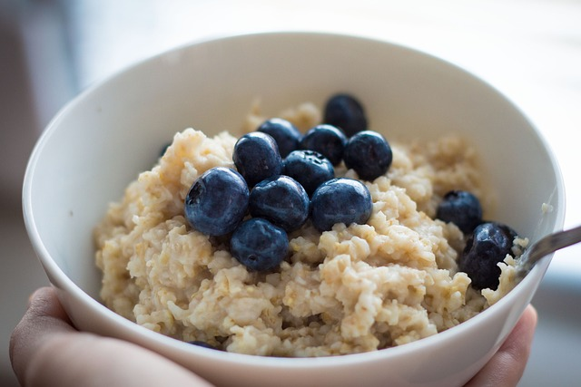

Oatmeal

Oatmeal with blueberries
The fabled oatmeal can now be made in the comfort of you own home! This recipe
will make even the most stubborn child jump with glee each time
you say"Oats for breakfast!".
Ingredients
- 1/2 cup of Old fashioned oats
- 1/2 cup of water
- 2 teaspoons of brown sugar
- cinnamon
- 1/4 cup of blueberries
Steps
- Add the oats and water into a bowl
- Put the bowl in a microwave for 1 minute and 30 seconds
- When the time is up, add the brown sugar, cinnamon, and blueberries
- Enjoy!